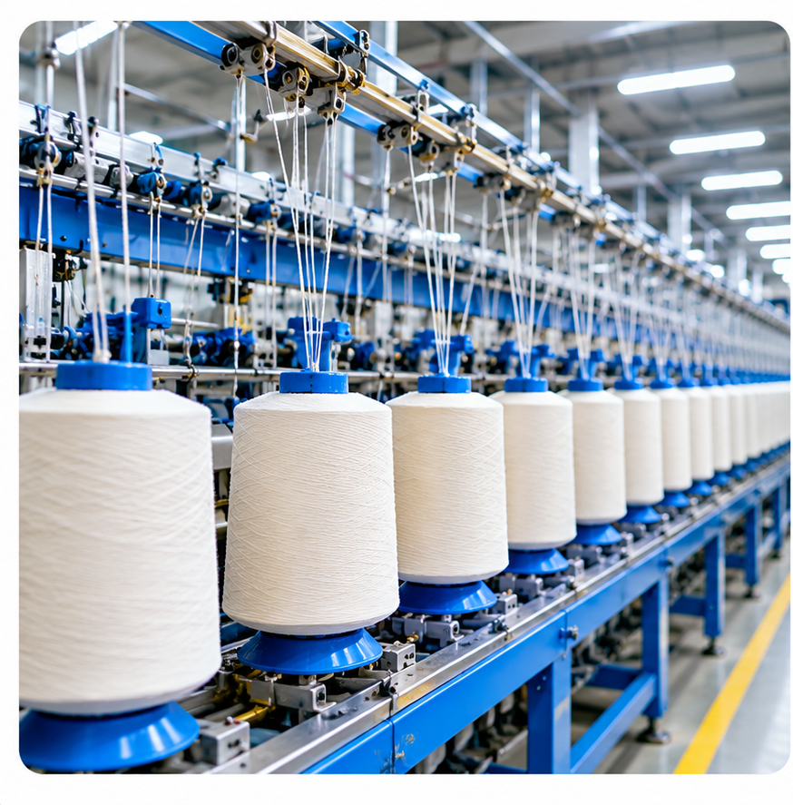

Our products.
What we trade.
Browse specific product categories handled across our business divisions. Product specifications and availability are confirmed for each enquiry.
This catalogue lists product categories, not guaranteed stock. Specifications, origin, availability, documentation and any applicable regulatory status are confirmed individually for each enquiry. Select a category to view more details.
 AGRICULTURE
AGRICULTUREAgricultural Products & Fertilizers
Fertilizers and agricultural inputs, subject to product specifications and applicable requirements.
 CROP PROTECTION
CROP PROTECTIONPesticides & Fungicides
Crop-protection products considered subject to registration, import and documentation requirements.

TEXTILETextile Yarn
Yarn sourcing enquiries based on fibre type, count, construction, packing and buyer specifications.
 TEXTILE
TEXTILEFinished Textile Products
Traditional Songket, fabrics and other finished textile products for international buyers, wholesalers and export enquiries.
 FOOD & COMMODITIES
FOOD & COMMODITIESFresh Fruits
Fresh produce enquiries assessed by variety, grade, season, packing and destination.
 FOOD & COMMODITIES
FOOD & COMMODITIESRice & Other Commodities
Rice, safety matches and other export or wholesale merchandise, subject to enquiry.
 INDUSTRIAL
INDUSTRIALIndustrial Machinery
Machinery and processing equipment enquiries based on technical and commercial requirements.